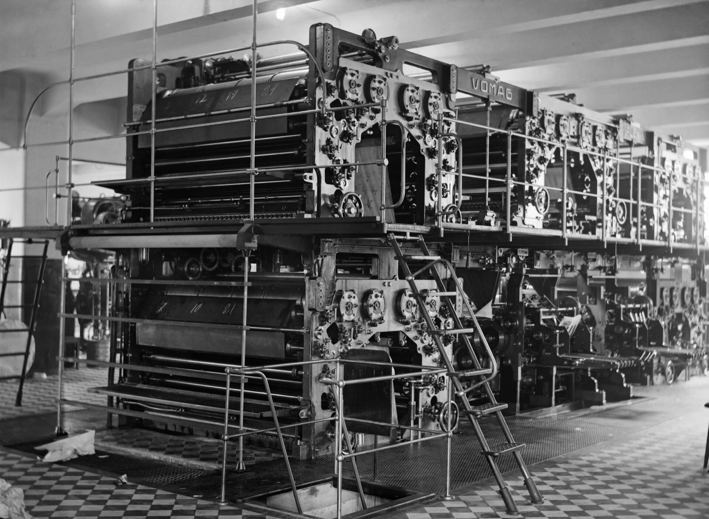
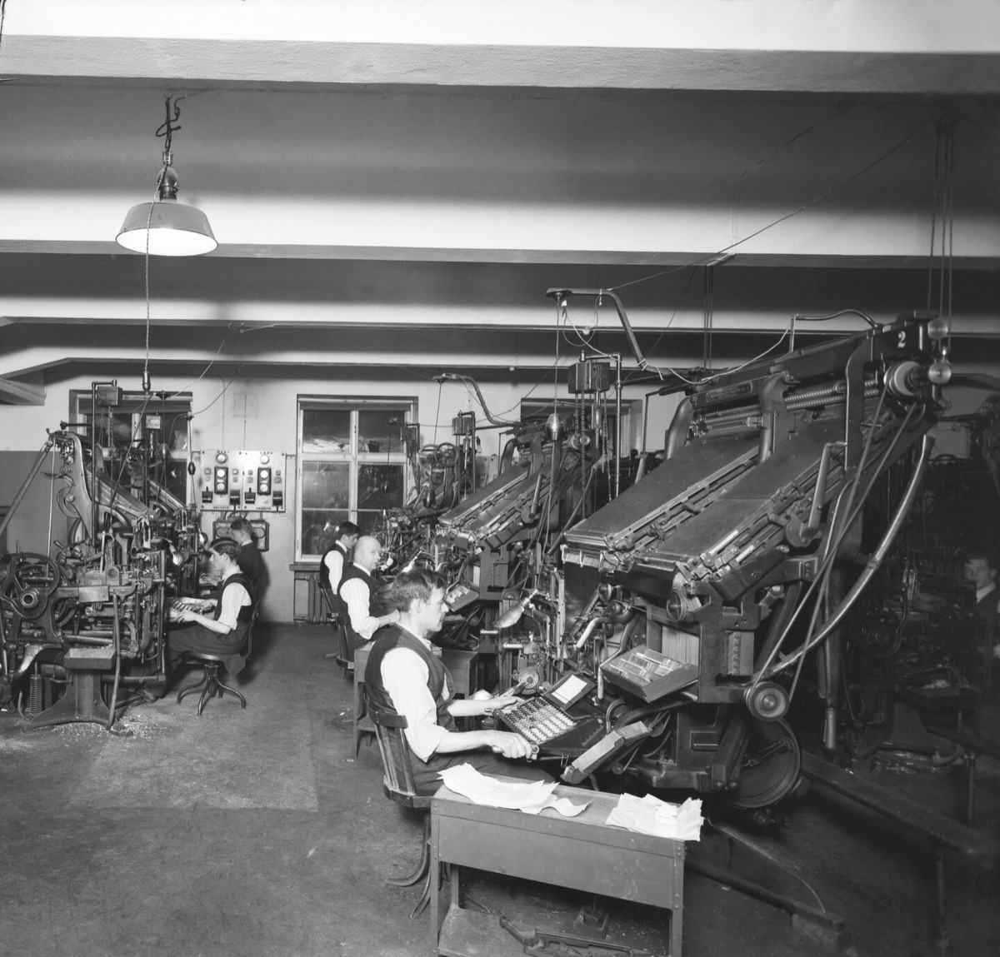
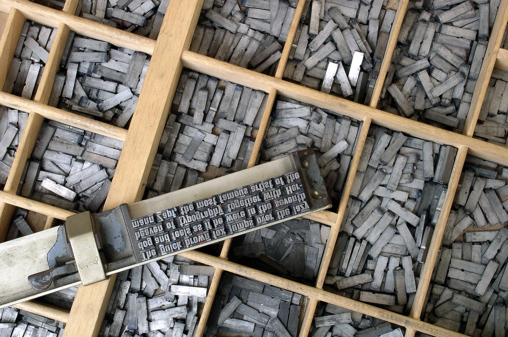
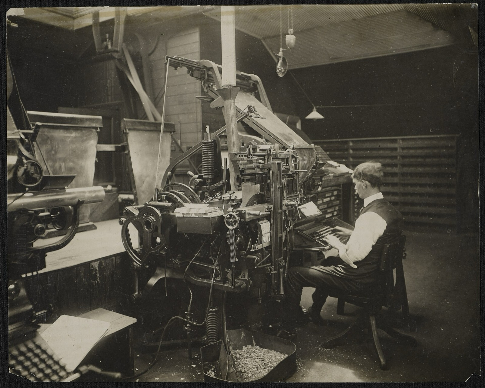
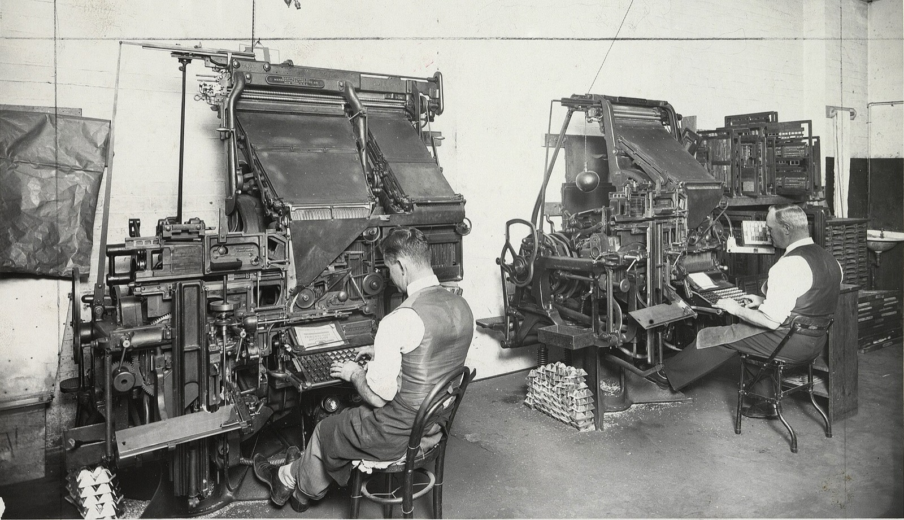

Breakouts
A CSS grid for long reads: every child sits in the text column, and one class lets it break out.
These four bands are the page's own grid: resize the window and watch the numbers. On a phone, popout and feature fold back into the text without a media query.
Try a class at any width
Pick the class of the highlighted picture. The page beside it is a real Breakouts page; give it a phone's width to see the wide areas fold.
<article class="breakouts">
<h1>Tomorrow's paper</h1>
<p>Copy reached the composing room…</p>
<figure class="">
<img src="linotype-room.jpg" alt="…">
</figure>
<p>The line-casting machine…</p>
</article>Four widths, one class each
The grid is Ryan Mulligan's named-line pattern: seven column tracks between eight named lines, centred on a reading column. Scroll, and one picture moves through them at this page's real width.

Every child starts in the text. .breakouts > * places each direct child in content, at most 50 characters wide.
.popout steps out a little. The content column plus the --popout track on each side, 2rem at most.
.feature steps out further. Popout plus the --feature track on each side, 5rem at most.
.full runs edge to edge. The whole container. Everything else keeps at least --gap from its edges.
.content, the reading column
The tracks
Each track is a custom property on :root, so any element can resize the grid for its own subtree. popout and feature can shrink to nothing; full never drops below --gap, which is what keeps text off the edge of a phone.
.breakouts {
display: grid;
grid-template-columns:
[full-start] var(--full)
[feature-start] var(--feature)
[popout-start] var(--popout)
[content-start] var(--content) [content-end]
var(--popout) [popout-end]
var(--feature) [feature-end]
var(--full) [full-end];
row-gap: var(--gap);
}
:root {
/* the row gap, and the smallest outer gutter */
--gap: clamp(1rem, 6vw, 3rem);
/* whatever is left, never less than --gap */
--full: minmax(var(--gap), 1fr);
--feature: minmax(0, 5rem);
--popout: minmax(0, 2rem);
--content: min(50ch, 100% - var(--gap) * 2);
}Measured in Chromium with the default system-ui font at 16px. Below about 573px popout and feature are as wide as the text; from about 824px every area has its full size. 50ch is measured in the grid's own font, so another font moves these numbers.
| Viewport | --gap | content | popout | feature | full |
|---|---|---|---|---|---|
| 375px | 22.5px | 330px | 330px | 330px | 375px |
| 768px | 46px | 504px | 568px | 676px | 768px |
| 1440px | 48px | 504px | 568px | 728px | 1440px |

.full The composing room of Hufvudstadsbladet, Helsinki, 1927.One side, nested, or resized
One side only
-start and -end break out on one side and keep the other edge on the text. -left and -right are their physical aliases.
<figure class="feature-start">…</figure>A compositor picked each letter from the case and set it in a stick, line by line.

The picture reaches the feature line on the start side only; its end edge stays on the text.
Nested, and still aligned
A .breakouts inside another becomes its subgrid: nested text lines up with the outer text, and a nested .full fills the nested area.
<div class="feature breakouts">
<p>…</p>
<img class="full" …>
</div>Outer text, in the outer content column.
Nested text, on the same edges.

A browser without subgrid gives the nested grid its own tracks instead.
Your proportions
Override a track on any element, not only :root. Keep the gutter term in --content so text still clears the edge.
.longform {
--content: min(36ch, 100% - var(--gap) * 2);
--feature: minmax(0, 8rem);
}A narrower measure for this block alone, and a wider feature track around it.

The rest of the page keeps the defaults.
- .breakouts
The container. Every direct child goes into the content column; nested in another
.breakouts, it becomes a subgrid. - .content
Spans
content. The reading column, at most 50ch. The default for every child; the class places one explicitly. - .popout
Spans
popout. Content plus--popout(up to 2rem) on each side. - .feature
Spans
feature. Popout plus--feature(up to 5rem) on each side. - .full
Spans
full. Edge to edge of the container. - .popout-start
Spans
popout-starttocontent-end. Out to the popout line on the start side only..popout-leftis its physical alias. - .popout-end
Spans
content-starttopopout-end. Out to the popout line on the end side only..popout-rightis its physical alias. - .feature-start
Spans
feature-starttocontent-end. Out to the feature line on the start side only..feature-leftis its physical alias. - .feature-end
Spans
content-starttofeature-end. Out to the feature line on the end side only..feature-rightis its physical alias. - .full-start
Spans
full-starttocontent-end. To the container's start edge, ending on the text..full-leftis its physical alias. - .full-end
Spans
content-starttofull-end. From the text to the container's end edge..full-rightis its physical alias. - .breakouts-grid
The same grid as
.breakouts, kept for older markup. - .container
Older helper. A centred wrapper:
max-width: 72rem,padding-inline: 1rem. - .grid
Older helper. Three columns with the children in the middle one,
minmax(0, var(--container-max-width, 64rem))wide..grid--fullspans all three. - .full-bleed
Older helper.
100vwwide from a parent centred in the viewport;--leftand--rightreach one viewport edge. Inside a.breakouts, prefer.full. - .breakout
Deprecated. Aliases of
.full-bleed*, removed in the next major version.
No class matches. Try popout, start or grid.
Install
npm install breakouts
# or: pnpm add breakouts · yarn add breakouts · bun add breakouts.feature-end Linotype operators setting the Detroit News, 1919.With Sass
The sources use the module system, so they need Dart Sass. The pkg: URL needs its Node package importer (Dart Sass 1.71 or newer): --pkg-importer=node on the command line, or new sass.NodePackageImporter() in JavaScript. Without it, add node_modules to the load paths and write @use 'breakouts'.
@use 'pkg:breakouts'; // tokens, reset, typography, grid, utilitiesPlain CSS
The full bundle, built with the default settings, readable or minified.
<link rel="stylesheet" href="node_modules/breakouts/dist/breakouts.css">
<link rel="stylesheet" href="https://cdn.jsdelivr.net/npm/breakouts@0.8/dist/breakouts.min.css">Entry points
Each emits its layers in the same order, utilities last, so you can stop at the size you need.
@use | Emits |
|---|---|
'pkg:breakouts' | Colour tokens, reset, typography, grid, then the utilities |
'pkg:breakouts/src/base' | Colour tokens, reset, typography, grid |
'pkg:breakouts/src/core' | Colour tokens and grid |
'pkg:breakouts/src/base/layout' | The grid and its custom properties only |
'pkg:breakouts/src/reset' | The reset only |
'pkg:breakouts/src/utilities' | Colour, spacing, position and typography utilities; load core or base too, the colour utilities read the --color-* tokens |
Around the grid, a thin, optional layer
Colour tokens
Every colour is a custom property. Brand and status colours get a dark value 50% lighter (color.scale($lightness: 50%)), so changing a light value changes its dark one too.
--color-background#ffffffdark #111111--color-surface#f0f0f0dark #1a1a1a--color-text#111111dark #eeeeee--color-muted#666666dark #aaaaaa--color-primary#0055ffdark 50% lighter--color-secondary#0033aadark 50% lighter--color-accent#ff4081dark 50% lighter--color-success#28a745dark 50% lighter--color-error#dc3545dark 50% lighter--color-warning#ffc107dark 50% lighter--color-neutral-100…900#f8f9fa … #212529same in every mode
Colour modes
No class follows the system. A class on <html> forces a mode, and each mode sets color-scheme so form controls and scrollbars match.
<html>Dark whenprefers-color-scheme: dark, light otherwise<html class="dark">Always dark<html class="light">Always light, even on a dark system
.dark and .light work on any element: they redefine the tokens for that subtree. Text that inherits its colour from body keeps the page's colour, so give the element its own:
<section class="dark bg-background text-color">…</section>Primary text and muted text on the background.
primarysecondaryaccentsuccesserrorwarning
Utilities
Optional and always emitted last, so on equal specificity a utility beats the grid: class="container px-0" removes the container's padding.
- Background
bg-+ background, surface, primary, secondary, accent, muted, success, error, warning - Text colour
text-color,text-+ the same nine names,text-neutral-100…-900 - Margin
m-* mt-* mr-* mb-* ml-* mx-* my-* - Padding
p-* pt-* pr-* pb-* pl-* px-* py-* - Spacing steps
00 ·10.25rem ·20.5rem ·30.75rem ·41rem ·51.25rem ·61.5rem ·auto, margins only - Position
position-static,-relative,-absolute,-fixed,-sticky - Stacking
z-index-0,-1,-10,-100,-1000 - Text
text-left,-center,-right,-justify;text-uppercase,-lowercase,-capitalize - Font
font-bold,font-normal,italic,not-italic;leading-tight1.25,-normal1.5,-loose2
The spacing utilities use physical sides: ml-* is the left side in every writing direction (issue #13).
Themes
A theme is a set of colours plus the modules that use them. Load it before the main entry point: on its own, a theme does not emit the spacing and position utilities (issue #10).
@use 'pkg:breakouts/src/theme/chupa-pop' with ($accent: #0f766e);
@use 'pkg:breakouts';- Chupa Popprimary #ecb838, secondary #ab4073, accent #196484
src/theme/chupa-pop - Medicalprimary #4682b4, secondary #9dc183, accent #a9a9a9, muted #6b7280, background #ffffff
src/theme/medical - Tootsie Popprimary #93329e, secondary #f2711c, accent #e94057, muted #ffe5b4; text #fff5e6 on #4f2f4c in every mode
src/theme/tootsie-pop
Each theme takes its own variables: $primary, $secondary, $accent; Medical and Tootsie Pop also $muted and $background; Tootsie Pop also $text. After a theme, @use 'pkg:breakouts' with (…) is a compile error: configure the theme instead.
Sass variables
Every one is !default, set with @use … with (…) on first load. A list value needs parentheses there.
@use 'pkg:breakouts' with (
$color-primary: #0f766e,
$font-family-base: ('Inter', system-ui, sans-serif),
);$color-{name}background, surface, text, muted, primary, secondary, accent, success, error, warning: the light values above$color-{name}-darkThe dark values$color-{name}-lightDefaults to$color-{name}: what.lightapplies$color-neutral-100…900#f8f9fa … #212529$font-family-basesystem-ui, sans-serif; with$font-size-base1rem and$line-height-base1.6$headings(h1: 2.25rem, h2: 1.75rem, h3: 1.5rem, h4: 1.25rem, h5: 1.125rem, h6: 1rem)$space-scale(0: 0, 1: 0.25rem, 2: 0.5rem, 3: 0.75rem, 4: 1rem, 5: 1.25rem, 6: 1.5rem, auto: auto)
$headings and $space-scale replace the default map, so list every level you want (issue #11). At runtime, the colour modes set the tokens with selectors more specific than :root: override each mode's selector, or prefer the Sass variables.
Base styles
In the full bundle and in src/base, not in src/core.
- Reset
box-sizing: border-boxeverywhere and every margin and padding set to 0, lists included;htmlandbodygetwidth: 100% - Bodysystem-ui, sans-serif, 1rem, line height 1.6,
--color-texton--color-background - HeadingsWeight 600, line height 1.2,
margin: 2rem 0 1rem; h1 2.25rem down to h6 1rem - Paragraphs, links
margin: 1rem 0; links in--color-primary, underlined,--color-secondaryon hover - Inside the gridHeadings and paragraphs that are direct children of
.breakoutslose their block margins: the row gap spaces them
Browser support: every current browser. Nesting relies on subgrid (Chrome and Edge 117, Firefox 71, Safari 16); older browsers give a nested grid its own tracks.